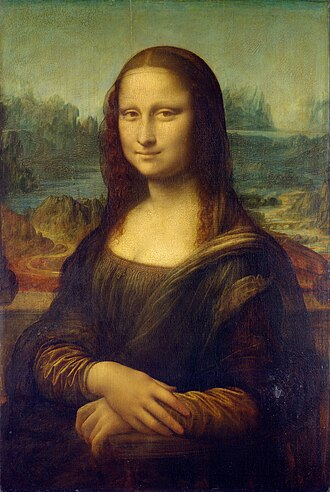
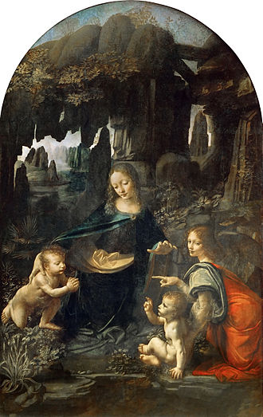
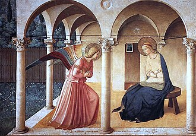
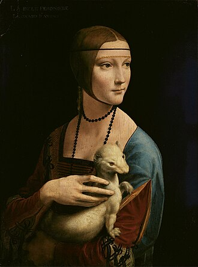

✦ Шедеври
Великі Твори






✦ Геній Ренесансу ✦
Художник · Вчений · Винахідник · Філософ
1452 — 1519
Людина, чий розум охоплював цілі всесвіти — від зірок до серця людини, від пензля до крила машини.
✦ Біографія
Леонардо да Вінчі народився 15 квітня 1452 року в невеликому тосканському містечку Вінчі, поблизу Флоренції. Позашлюбний син нотаріуса Піеро да Вінчі та селянки Катерини, він виріс у будинку діда та дядька, де пробудилася його невгамовна цікавість до природи.
У 1466 році він став учнем знаменитого флорентійського майстра Андреа дель Верроккйо. Саме там молодий Леонардо осягнув мистецтво живопису, скульптури та інженерної справи — три дисципліни, які він незабаром підняв на безпрецедентну висоту.
Протягом усього свого довгого життя він служив при дворах Мілана, Флоренції, Риму та, нарешті, Франції, де й помер 2 травня 1519 року на руках у короля Франциска I.
Після себе він залишив більше 7000 сторінок нотаток і малюнків — унікальний інтелектуальний архів людства.
✦ Шедеври




✦ Інженерія
— Леонардо да Вінчі